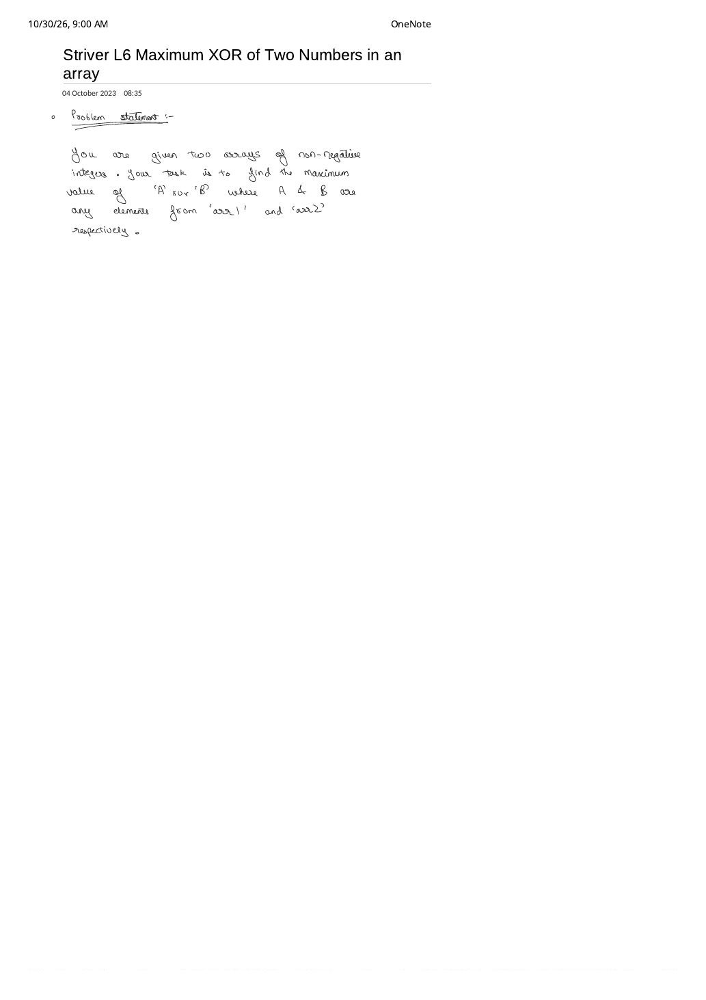

Bitwise Trie & Maximum XOR of Two Numbers (LeetCode 421)
Expanded from handwritten competitive coding study notes (07_Striver_L5_Bit_PreRequeisites_for_TRIE_Problems.pdf, 08_Striver_L6_Maximum_XOR_of_Two_Numbers_in_an_array.pdf, 09_Ques_421.pdf)
Strings are not the only keys with prefixes: every non-negative 32-bit integer is a 32-character binary string over the alphabet {0, 1}, read from Most Significant Bit (bit $31$) down to Least Significant Bit (bit $0$). Storing numbers in a 2-way Binary Trie lets us answer "which element in an array maximizes $A \oplus B$?" in $O(32) = O(1)$ steps per query—reducing an $O(N^2)$ pairwise XOR scan to $O(N)$.
1. Bit Manipulation Prerequisites for Binary Tries (Striver L5)
Before building a Binary Trie, three bit-level conventions from 07_Striver_L5 must be second nature:
Fixed-Width Binary Representation & Why Leftmost Bits Dominate
- Do not view $9$ as a 4-bit string
1001—view the entire fixed-width register padded with leading zeros:- 32-bit
int: $9 = \texttt{00000000\dots00001001}_2$ (indices $31$ on the far left down to $0$ on the far right). - 64-bit
long long: 64 bits (indices $63$ down to $0$).
- 32-bit
- MSB Greedy Dominance: Because $2^k \gt \sum_{j=0}^{k-1} 2^j = 2^k - 1$, setting a single
1bit further to the left strictly outweighs setting every bit to its right! That is why Binary Tries are always rooted at the MSB (bit $31$) and walk downward to bit $0$.
XOR Rules, Checking Bit $i$, and Turning On Bit $i$
Core Bitwise Identities
- XOR (
^) Truth Table: Different bits yield $1$; identical bits yield $0$: $$0 \oplus 0 = 0, \qquad 1 \oplus 0 = 1, \qquad 0 \oplus 1 = 1, \qquad 1 \oplus 1 = 0$$ Across multiple operands, an odd number of $1$s produces $1$, an even number of $1$s produces $0$, and $x \oplus \bar{x} = \texttt{11\dots1}_2$. - Check if the $i$-th bit (0-indexed from right) is set: Right-shift
numby $i$ so bit $i$ lands at position $0$, then mask with1(0000...0001):((num >> i) & 1) != 0— e.g. for $9 = \texttt{...01001}_2$ and $i = 3$:(9 >> 3) & 1 == 1. - Turn ON (set) the $i$-th bit: Shift
1left by $i$ to build a single-bit mask (e.g.1 << 2$= \texttt{...00100}_2$), then bitwise OR withnum:num = num | (1 << i)(use1LL << ifor 64-bit integers).
2. Maximum XOR Across Two Arrays (Striver L6)
Given two arrays arr1 (size $N$) and arr2 (size $M$) of non-negative integers, find the maximum value of $A \oplus B$ over all $A \in \text{arr1}$ and $B \in \text{arr2}$.
- Build the 32-Bit Binary Trie on
arr1: EachNodeholdsNode* links[2] = {nullptr, nullptr}. No terminalflagis needed because every inserted integer has the exact same path length ($32$ edges from bit $31$ down to bit $0$). - Query
getMax(x)for each $x \in \text{arr2}$: InitializemaxXor = 0and start atroot. For $i = 31$ down to $0$:- Extract $x$'s $i$-th bit:
int bit = (x >> i) & 1;. - Greedy opposite-bit choice: To make bit $i$ of $x \oplus A$ equal to $1$, we want an element $A$ whose $i$-th bit is
1 - bit! - If
node->containsKey(1 - bit)is non-null, we turn ON bit $i$ in our answer (maxXor |= (1 << i)) and step intonode->get(1 - bit). - Otherwise, every candidate remaining in this subtree shares bit
bitwith $x$, contributing $0$ at position $i$; we are forced to step intonode->get(bit).
- Extract $x$'s $i$-th bit:
#include <bits/stdc++.h>
using namespace std;
struct BitNode {
BitNode* links[2] = {nullptr, nullptr};
bool containsKey(int bit) const { return links[bit] != nullptr; }
BitNode* get(int bit) const { return links[bit]; }
void put(int bit, BitNode* node) { links[bit] = node; }
};
class BinaryTrie {
BitNode* root;
public:
BinaryTrie() : root(new BitNode()) {}
void insert(int num) {
BitNode* node = root;
for (int i = 31; i >= 0; i--) {
int bit = (num >> i) & 1;
if (!node->containsKey(bit)) {
node->put(bit, new BitNode());
}
node = node->get(bit);
}
}
int getMax(int num) const {
BitNode* node = root;
int maxNum = 0;
for (int i = 31; i >= 0; i--) {
int bit = (num >> i) & 1;
// Greedily prefer the opposite bit (1 - bit) so bit ^ (1 - bit) == 1
if (node->containsKey(1 - bit)) {
maxNum |= (1 << i);
node = node->get(1 - bit);
} else {
node = node->get(bit);
}
}
return maxNum;
}
};
int maxXOR(int n, int m, const vector<int>& arr1, const vector<int>& arr2) {
BinaryTrie trie;
for (int a : arr1) trie.insert(a);
int maxi = 0;
for (int b : arr2) {
maxi = max(maxi, trie.getMax(b));
}
return maxi;
}
// Time Complexity: O(32 * N + 32 * M) = O(N + M)
// Space Complexity: O(32 * N) Binary Trie nodes3. LeetCode 421: Maximum XOR in a Single Array & Handwritten Trace
In LeetCode 421, both numbers come from the same array nums = [3, 10, 5, 25, 2, 8] (note that $x \oplus x = 0$, so self-pairing never falsely inflates a positive maximum). Writing all six numbers in 5-bit binary (weights $16, 8, 4, 2, 1$) just as in 09_Ques_421.pdf:
| Decimal | 5-Bit Binary (16·8·4·2·1) | Querying $x = 25$ ($\texttt{11001}_2$) Bit-by-Bit |
|---|---|---|
| $3$ | 00011 | Bit 4 ($16$): $25$ has 1 $\to$ want 0 $\to$ exists! (ans += 16, take 0) |
| $10$ | 01010 | Bit 3 ($8$): $25$ has 1 $\to$ want 0 $\to$ exists under 0! (ans += 8, take 00) |
| $5$ | 00101 | Bit 2 ($4$): $25$ has 0 $\to$ want 1 $\to$ exists under 00! (ans += 4, take 001 = $\{5\}$) |
| $25$ | 11001 | Bit 1 ($2$): $25$ has 0 $\to$ want 1 $\to$ null under 001; forced to 0 (ans += 0) |
| $2$ | 00010 | Bit 0 ($1$): $25$ has 1 $\to$ want 0 $\to$ null under 0010; forced to 1 (ans += 0) |
| $8$ | 01000 | Result: $\texttt{11001}_2 \oplus \texttt{00101}_2 = \texttt{11100}_2 = 16 + 8 + 4 = \mathbf{28}$! |
1) and $5$ goes left (0), securing $+16$, $+8$, and $+4$ across the top three bits before converging to $0$ on the bottom two bits ($28$).Bonus Insight from the Handwritten Sketch: Two-Pointer Split-Subtree DFS
At the bottom of 09_Ques_421.pdf, a second, purely tree-structural view is sketched: "Until the branch split, keep two pointers together; as soon as you detect two children (0 and 1), send pointer L left and pointer R right!"
- While every number shares the same leading bits (only one child exists), $A \oplus B$ is forced to be $0$ at those levels.
- At the highest bit $b$ where both
links[0]andlinks[1]exist, the optimal pair must pick one number fromL = links[0]and one fromR = links[1](contributing $2^b$). - Below that split, we recursively pair opposite children—
(L->0, R->1)and(L->1, R->0)—whenever at least one opposite pair exists, falling back to same-bit pairs(L->0, R->0)/(L->1, R->1)only when neither opposite pair is available!
class Solution {
struct Node {
Node* ch[2] = {nullptr, nullptr};
};
// Split-pointer recursion sketched at the bottom of 09_Ques_421.pdf
int maxXorPair(Node* L, Node* R, int bit) {
if (!L || !R || bit < 0) return 0;
if (L == R) {
// Haven't split yet: if both 0 and 1 exist, split L left and R right!
if (L->ch[0] && L->ch[1]) {
return (1 << bit) + maxXorPair(L->ch[0], L->ch[1], bit - 1);
}
Node* only = L->ch[0] ? L->ch[0] : L->ch[1];
return maxXorPair(only, only, bit - 1);
}
// Already split: prefer opposite-bit pairings (0 vs 1) or (1 vs 0)
int best = -1;
if (L->ch[0] && R->ch[1]) best = max(best, (1 << bit) + maxXorPair(L->ch[0], R->ch[1], bit - 1));
if (L->ch[1] && R->ch[0]) best = max(best, (1 << bit) + maxXorPair(L->ch[1], R->ch[0], bit - 1));
if (best != -1) return best;
// Forced into matching bits (contributes 0 at `bit`)
if (L->ch[0] && R->ch[0]) best = max(best, maxXorPair(L->ch[0], R->ch[0], bit - 1));
if (L->ch[1] && R->ch[1]) best = max(best, maxXorPair(L->ch[1], R->ch[1], bit - 1));
return max(0, best);
}
public:
int findMaximumXOR(vector<int>& nums) {
Node* root = new Node();
for (int x : nums) {
Node* cur = root;
for (int b = 30; b >= 0; b--) { // Non-negative signed 32-bit ints use bits 30..0
int bit = (x >> b) & 1;
if (!cur->ch[bit]) cur->ch[bit] = new Node();
cur = cur->ch[bit];
}
}
return maxXorPair(root, root, 30);
}
};From the Handwritten Notes
Expand the original handwritten pages below to inspect the bit-manipulation derivations, binary Trie sketches, and LeetCode 421 trace:
View original note — Striver L5: Bit Prerequisites for Trie Problems (Page 1: 32/64-Bit View, XOR Parity & Checking Set Bits)

((num >> i) & 1) != 0.View original note — Striver L5: Bit Prerequisites for Trie Problems (Page 2: Turning On Bit $i$ with Left-Shift Mask)

1 << i and setting a bit via bitwise OR num | (1 << i).View original note — Striver L6: Maximum XOR of Two Numbers Across Two Arrays


A ^ B across arr1 and arr2.View original note — LeetCode 421: Maximum XOR of Two Numbers in an Array ([3, 10, 5, 25, 2, 8] → 28 & Split-Pointer Tree)

[3, 10, 5, 25, 2, 8], $5 \oplus 25 = 28$ tree trace, full 4-bit binary tree, and split-pointer L/R logic.